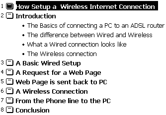
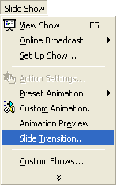
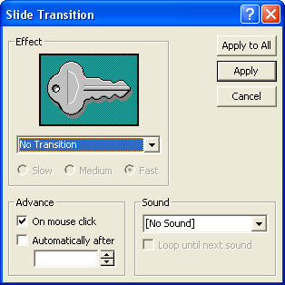
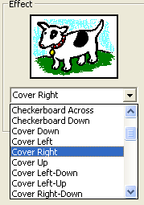
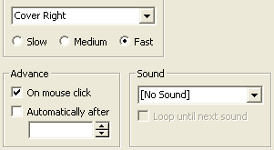
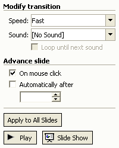

Free
powerpoint
Tutorials
|
Free
powerpoint
Tutorials
|
|
 home home |
Stay at Home and Learn | ||||
Slide Transitions in PowerPoint |
|||||
|
Part 1, 2, 3, 4, 5, 6, 7, 8, 9, 10, 11
If you view the presentation for this section, you'll see that each slide comes in from the left hand side of the screen, and moves its way to the right hand side. This is called a Transition. You'll now see how to add Transitions to your own presentations. Your presentation should now have 8 slides in it. The PowerPoint outline view on the left should look like this:  Click on slide 1 to highlight it. From the PowerPoint menu bar, click on Slide Show. From the Slide Show menu, select Slide Transition:  When you click on Slide Transition, you'll see the following dialogue box appear in PowerPoint 2000 (for PowerPoint 20003 users, you'll see a list of all the effect in the Task Pane on the right hand side of your screen):  At the moment, the dropdown is set to No Transition. Click the black down arrow to see the list of available effects:  The one we chose for our slides was Cover Right. Click on this one and you should see a preview of it, just above the dog (or is it a cow?). Go through the list and see which one you like best. When you're happy with your choice click the Apply to All button. (In PowerPoint 2003, click the Apply to all Slides button at the bottom of the task pane.) This will ensure that every slide covers the previous one from left to right. If you only want the effect to appear on the selected slide, click the Apply button instead of Apply to All. Before you click a button, though, have a look at the rest of this dialogue box: PowerPoint 2000 
PowerPoint 2003  The Slow, Medium, and Fast options refer to the speed of the transition. Again, you'll see a preview of what they do when you select each option. You can also play a Sound when each slide appears. Click the dropdown list to see the available options. But they are the same sounds you heard for the bullets. You have to decide whether playing a sound with each new slide is suitable for the presentation. If it's a professional, work-based presentation then the answer is almost always No. After all, do you really want your boss scared half to death by the sound of Gunshots and Explosions? OK, don't answer that! The other option is Advance. The default is to have each slide transition after the mouse has been clicked. You can also tick the box next to Automatically after. This lets you set how many seconds/minutes to wait before the next slide appears. But when you've finished experimenting, click either the Apply to All, or Apply to all Slides button. This will return you to your main presentation. Press F5 and run your presentation. Ask yourself, Do the slide transitions look OK, or a bit gimmicky?
Before we leave this section and move on to Presentation Three, we'll
take a look at the Pen tool.
|
||||